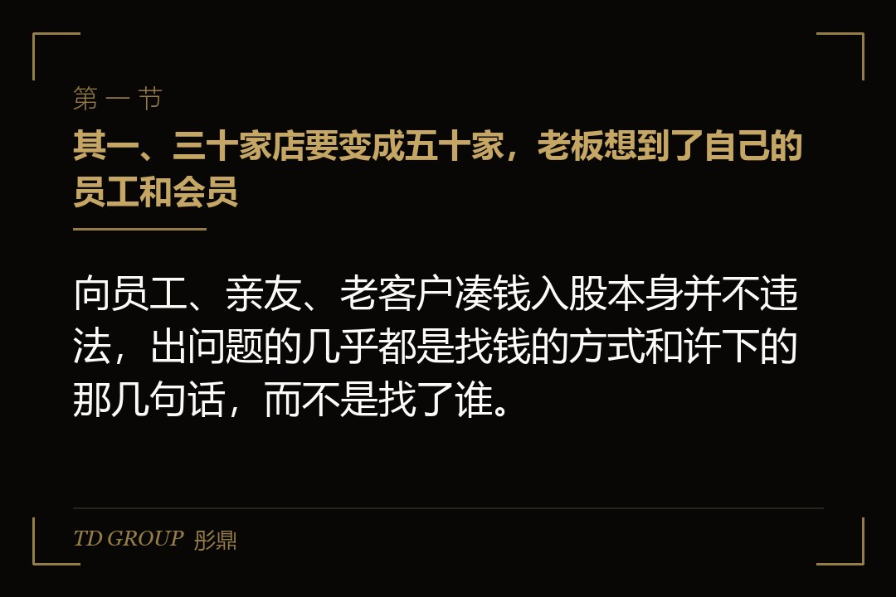
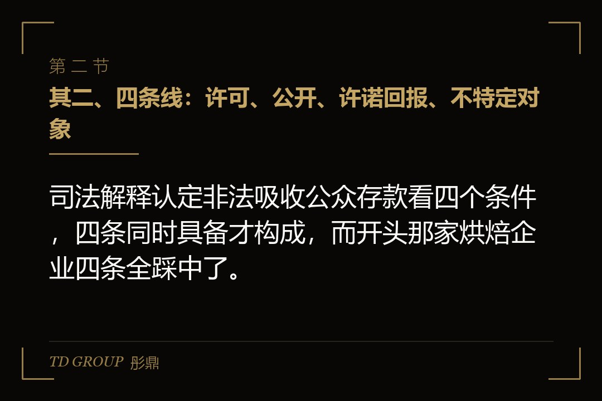
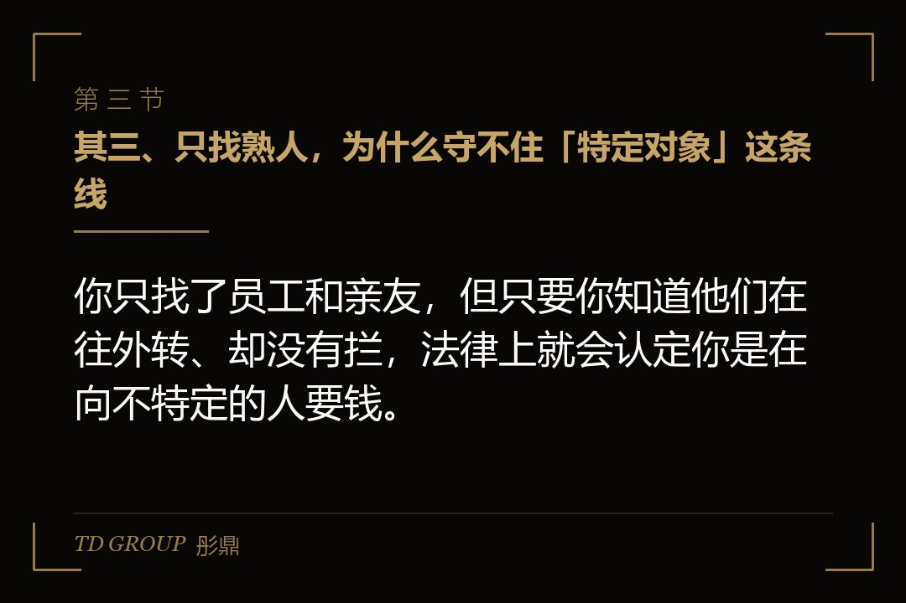

其一、三十家店要变成五十家，老板想到了自己的员工和会员

结论先行：向员工、亲友、老客户凑钱入股本身并不违法，出问题的几乎都是找钱的方式和许下的那几句话，而不是找了谁。
假设有家做社区烘焙连锁的企业，开了三十几家店，每家店都在赚钱，老板想在一年里再开二十家，算下来差两千万。银行要抵押物，他没有；见了两家机构，对方要求对赌和回购，他不愿意签。
他想了一个办法：先让店长和骨干员工入股，再向会员开放，每人五万元起，年底按投入给一成分红，三年后公司原价回购。店长们很积极，拉了个群，把做好的海报和收款二维码发了进去。有人又转进了自己小区的业主群，还有会员在朋友圈里帮着转。
两个月后，钱凑到了一千八百万，入股的人有三百多个，其中一半以上老板根本不认识。工商登记上的股东还是原来那几个，其余的都写在一张表格里，由几位店长代持。
先把边界划清楚。员工持股平台怎么搭、投资款到账后怎么入账、股东人数穿透怎么计算，各自都有专门的讨论，本文不展开。这里只讲一件事：向身边人要钱，在哪几条线上会从融资变成别的东西。
其二、四条线：许可、公开、许诺回报、不特定对象

结论先行：司法解释认定非法吸收公众存款看四个条件，四条同时具备才构成，而开头那家烘焙企业四条全踩中了。
最高人民法院关于审理非法集资刑事案件的司法解释，二〇二二年三月一日起施行的修正版本写得很清楚：违反国家金融管理法律规定，向社会公众吸收资金，同时具备四个条件的，应当认定为非法吸收公众存款或者变相吸收公众存款。
这四个条件翻成大白话是这样的：其一，没有经过有关部门依法许可，或者借用合法经营的形式吸收资金；其二，通过网络、媒体、推介会、传单、手机信息等途径向社会公开宣传；其三，许诺在一定期限内以货币、实物、股权等方式还本付息或者给付回报；其四，向社会公众即社会不特定对象吸收资金。
注意第三个条件里的「股权」两个字。很多老板以为，自己给的是股份不是利息，所以跟集资扯不上关系。但「年底按投入给一成分红、三年后原价回购」，本质上就是在许诺期限内还本并给付回报，名字叫入股，性质跟借钱付息差不多。
同一条司法解释的第二款给出了不属于的情形：未向社会公开宣传，在亲友或者单位内部针对特定对象吸收资金的，不属于非法吸收或者变相吸收公众存款。这就是老板们常说的「只找熟人就没事」的出处，但它有两个前提，一个是不公开宣传，一个是对象特定，缺一个都不成立。
其三、只找熟人，为什么守不住「特定对象」这条线

结论先行：你只找了员工和亲友，但只要你知道他们在往外转、却没有拦，法律上就会认定你是在向不特定的人要钱。
最高人民法院、最高人民检察院和公安部二〇一四年联合印发的非法集资案件意见，专门补了两种情形，认定为向社会公众吸收资金，而不是针对特定对象：一是在向亲友或者单位内部人员吸收资金的过程中，明知亲友或者单位内部人员向不特定对象吸收资金而予以放任；二是以吸收资金为目的，将社会人员吸收为单位内部人员，并向其吸收资金。
开头那家企业两条都沾上了。店长把海报转进业主群，老板在群里看得见，没有说一句「只限内部」；而会员本来就是社会上的消费者，办一张会员卡不会让他变成「单位内部人员」。更麻烦的是，有些店长为了凑数，让新来入股的人先挂个兼职店员的名。
司法实践看的是实质：钱是从谁手里来的，这些人跟公司有没有真实的内部关系，老板对钱是怎么一层层流进来的知不知道。所以「我只找了我认识的人」这句话，挡不住那三百多个名字里一半以上根本不认识的事实。关键在于，特定对象不是看你起初找的是谁，而是看钱最后是从多大一个圈子里流进来的。
其四、公开宣传不是只有打广告
结论先行：朋友圈里的一张海报、群里转发的二维码、一场请了几十位客户的答谢会，在法律上都可能算公开宣传。
很多老板对「公开宣传」的理解停留在电视广告和街头传单上，觉得自己没花一分钱投广告，就不算公开。可司法解释列举的途径里，网络和手机信息排在最前面，今天绝大多数的扩散恰恰就是从微信群和朋友圈开始的。
上面那份二〇一四年的意见还规定，向社会公开宣传包括以各种途径向社会公众传播吸收资金的信息，以及明知吸收资金的信息向社会公众扩散而予以放任等情形。也就是说，不一定要你自己去发，别人帮你转、你知道了却默许，同样算。
假设另一家做健康食品的企业换了一种办法：不发海报，而是每月办一场「股东答谢会」，请老客户来吃饭、听老板讲公司前景，会后现场登记入股意向。每场五六十人，有人带朋友来，有人拍视频发到网上。司法解释里写的「推介会」，指的就是这种形态。
所以判断一件事算不算公开，不看你用了什么形式，而看这条信息最终会不会传到你控制不了的人手里。答案是会，那就要按公开宣传来对待。
其五、二百人和五十人：股东名单上的两道硬线
结论先行：证券法把向特定对象发行累计超过二百人定为公开发行，有限公司股东又以五十人为上限，这两个数都不能靠代持绕过去。
证券法第九条规定，公开发行证券必须依法注册；有下列情形之一的，为公开发行：向不特定对象发行证券；向特定对象发行证券累计超过二百人，但依法实施员工持股计划的员工人数不计算在内；以及法律、行政法规规定的其他发行行为。同一条还规定，非公开发行证券，不得采用广告、公开劝诱和变相公开方式。
这意味着即便每一个入股的人都是真实的内部员工或者亲友，累计人数超过二百，也已经跨进公开发行的范围。而未经注册擅自发行股票，刑法里有对应的罪名，这是和非法吸收公众存款并列的另一条路。
公司法那条线更近。新公司法规定，有限责任公司由一个以上五十个以下股东出资设立。开头那家企业三百多人入股，工商登记放不下，于是找店长代持——这正是最常见的绕法，也是最容易出事的绕法。
代持改变的只是登记簿上的名字，改变不了钱是从三百多个人手里来的事实。无论是审判实践还是后来的融资尽调、上市审核，看股东人数时都会穿透到实际出资人。代持在这里不是解决办法，它只是把问题藏进了一张不在工商局的表格里。
其六、过了线之后：刑事门槛、行政处置和一张洗不干净的股东名册
结论先行：这件事一旦被认定越线，后果不是退钱了事，而是按数额和人数追究刑事责任，而且直接落在组织者本人身上。
二〇二二年修正后的司法解释规定，非法吸收或者变相吸收公众存款数额在一百万元以上，或者对象在一百五十人以上，或者给存款人造成直接经济损失数额在五十万元以上的，应当依法追究刑事责任；数额五十万元以上、同时有曾受刑事追究、二年内受过行政处罚或者造成恶劣社会影响等情节之一的，也要追究。
对照开头那家企业：一千八百万、三百多人，两个数都远远超过起点。哪怕门店都在正常经营、分红一期没有断过，只要四个条件具备，就不影响定性。很多老板以为「只要钱没亏掉就不算事」，这恰恰是最常见的误判。
行政一侧还有《防范和处置非法集资条例》，二〇二一年五月一日起施行。它把非法集资定义为未经国务院金融管理部门依法许可或者违反国家金融管理规定，以许诺还本付息或者给予其他投资回报等方式，向不特定对象吸收资金的行为，并规定了处置和清退程序。
就算最后没有走到这一步，这批钱也会在企业身上留下长期的痕迹。下一轮找专业投资人时，尽调会要求说明全部历史出资，三百多个代持关系、一堆写着保底分红和回购的收据，要逐一清理、逐一签确认，投资人往往会要求把这件事处理干净作为交割前提。
其七、真要从身边人那里拿钱，怎样才算一次正经的融资
结论先行：从员工、亲友、上下游那里拿钱完全可以，做法是定向增资：对象筛过、人数可控、签正式协议、登记到位、不许诺保底。
对象要先筛。入股的人应该是跟公司有真实关系、看得懂这门生意、亏得起这笔钱的人：核心员工、真正的老朋友、上下游的合作方。一个一个谈，而不是做一张海报让人自己报名。人数在动手之前就要算好，把有限公司五十人和证券法二百人这两道线留出余量。
形式要做实。签正式的增资协议，写清楚价格、占比和权利；开股东会、改章程、办工商变更，钱进公司的账户，不进个人卡；员工这一块走规范的持股平台，而不是由店长一个个代持。每一笔都能在登记簿和银行流水上对上号。
条款要守住。股权就是股权，赚了分红、亏了共担，不许诺固定比例的分红，也不写到期原价回购的保底。想让员工更安心，可以把退出规则、离职时的回购价格公式写清楚，但那是治理安排，不是还本付息。
还有一种选择是不入股、走借款：跟少数特定的人签书面借款合同，写明金额、期限和利息，按民间借贷的规则办。它和入股是两套法律关系，不要混在同一张收据上，更不要一边叫入股一边许诺按月付息。
我们跟华尔街俱乐部有合作，接触过不少先从身边人筹钱、后来又要引进专业投资人的企业。卡在尽调那一关的，多半不是当初钱不该拿，而是拿的时候没有人把人数、登记和那句「保底分红」的后果算清楚。
最后留一个问题。假设你就是开头那家烘焙连锁的老板，已经有二十几位店长主动说想入股，还有几十个老会员在问：你是只收店长的钱、按规矩做一次定向增资，还是先把会员那边的口子也开出来？如果是你，你会怎么定这条线？